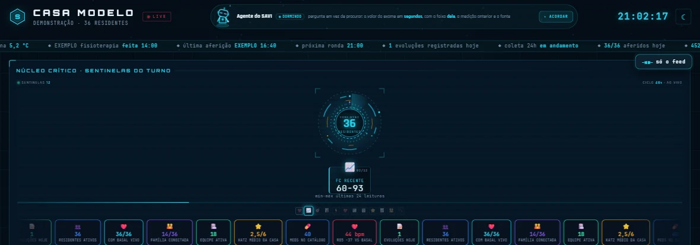
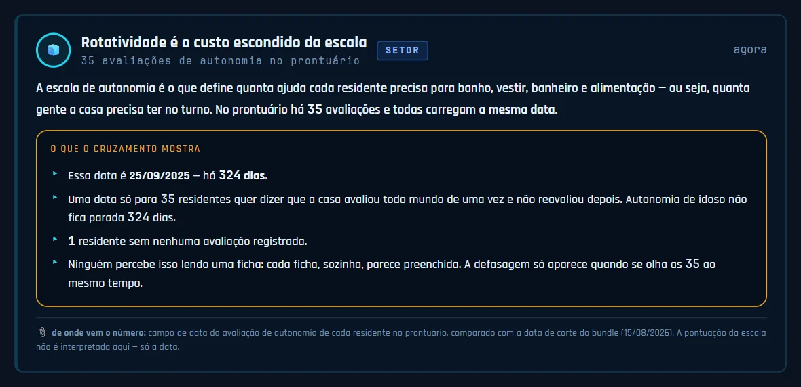
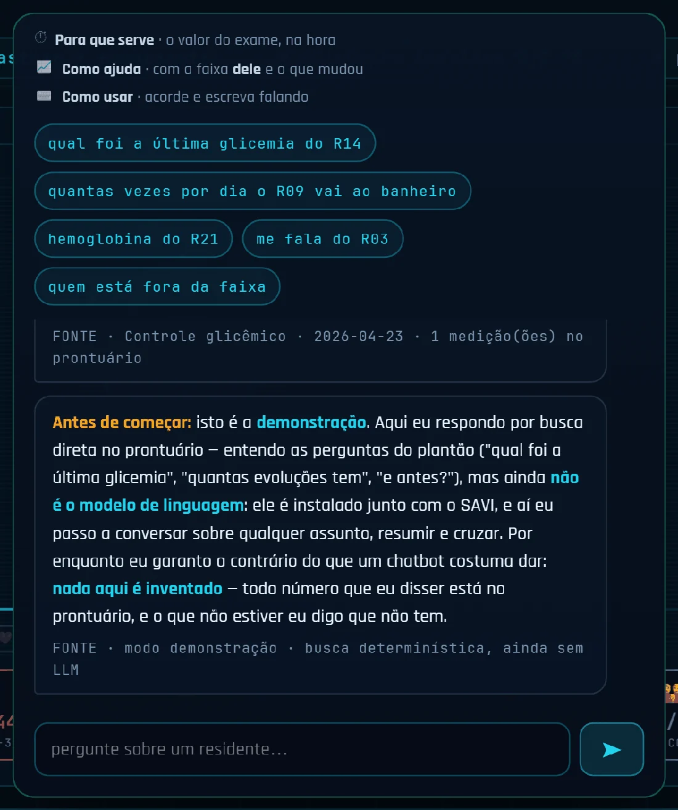

O prontuário registra o ritual, não o paciente. The medical record documents the ritual, not the patient.
Descobrimos isso em 27.928 aferições de um prontuário real de sete anos: 90% das pressões arteriais terminam em 0 ou 5. Um aparelho digital produziria 20%. Construímos o SAVI para capturar o dado onde ele nasce — e mais dois produtos, que já estão no ar. We found it in 27,928 vital-sign readings from seven years of a real medical record: 90% of blood pressures end in 0 or 5. A digital device would produce 20%. We built SAVI to capture data where it is born — plus two other products already shipped.
O número não foi medido. Foi lembrado. The number wasn't measured. It was remembered.
Um esfigmomanômetro digital devolve qualquer valor: 138, 142, 137. Se o registro fosse a leitura do aparelho, o último dígito se distribuiria por igual — cerca de 20% cairiam em 0 ou 5. Não é o que acontece. A digital cuff returns any value: 138, 142, 137. If the record were the device reading, the final digit would spread evenly — about 20% would land on 0 or 5. That is not what happens.
Recomputado em 20/08/2026 sobre o prontuário do piloto (2020–2026).Recomputed 2026-08-20 over the pilot's record (2020–2026).
A frequência cardíaca é o único sinal que passa no teste — e é justamente o único que o oxímetro entrega pronto na tela. O profissional lê e transcreve. Nos outros, ele mede, guarda de cabeça, atende outra coisa e escreve depois. Heart rate is the one vital that passes the test — and it is exactly the one the pulse oximeter hands over ready on screen. The professional reads and transcribes it. For the others, they measure, hold it in their head, get pulled away, and write it later.
Isso não é falha de quem cuida. É falha de interface. E é um problema que nenhum prontuário eletrônico resolve, porque todos eles começam depois — no campo em branco esperando alguém digitar. This is not a failure of the people giving care. It is an interface failure. And no electronic health record fixes it, because every one of them starts too late — at a blank field waiting for someone to type.
SAVI Saúde
Captura o dado onde ele nasce, calcula a faixa normal de cada pessoa — não a da tabela — e roda 452 padrões clínicos sobre a série temporal. O enfermeiro revisa e assina. A IA nunca escreve um fato clínico. Captures data where it is born, computes the normal range of each person — not the textbook's — and runs 452 clinical patterns over the time series. The nurse reviews and signs. The AI never writes a clinical fact.

Painel real do produto · casa de demonstração, sem dado de pacienteReal product dashboard · demo house, no patient data
O microfone do quarto não transcreve nada à noite — só conta eventos acústicos. Tosse é um deles. Três noites de subida viram um aviso antes de qualquer febre.The room microphone transcribes nothing at night — it only counts acoustic events. Coughing is one of them. Three rising nights become a warning before any fever.

35 avaliações de autonomia no prontuário, todas com a mesma data de 324 dias atrás. Cada ficha, sozinha, parece preenchida. A defasagem só aparece quando se olha as 35 ao mesmo tempo.35 autonomy assessments in the record, all carrying the same date from 324 days ago. Each chart alone looks complete. The gap only shows when you look at all 35 at once.

As camadas 4 e 5 são candidatas a SaMD Classe II (ANVISA RDC 657/751; regra 11 do MDR europeu). O registro não foi iniciado, e o plano escrito é registrar antes de comercializar. Enquanto isso, a predição estatística fica desligada por trava no código. Layers 4 and 5 are Class II SaMD candidates (ANVISA RDC 657/751; Rule 11 of the EU MDR). Registration has not started, and the written plan is to register before commercialising. Meanwhile, statistical prediction stays off by a hard assert in the code.
Não afirmamos conformidade regulatória nem certificação. O que existe é o modelo FHIR R4 como saída, verificação de assinatura ICP-Brasil implementada, e as resoluções do COFEN codificadas como regra de sistema. We claim neither regulatory compliance nor certification. What exists is FHIR R4 as an output model, implemented ICP-Brasil signature verification, and Brazilian nursing-council resolutions encoded as system rules.
BarberGO
Barbearia contrata por indicação e WhatsApp. O BarberGO é o encontro entre barbeiro e barbearia com a mecânica de swipe — e o perfil só vale depois que a identidade é conferida por um modelo de visão, que compara a foto do documento com uma selfie. Barbershops still hire by word of mouth and WhatsApp. BarberGO is barber-meets-shop with swipe mechanics — and a profile only counts once identity is checked by a vision model that compares the ID photo against a selfie.
Três provedores de IA de fabricantes diferentes, em cascata de fallback: se um cai, o próximo assume. É o produto que responde à pergunta “vocês conseguem entregar até a loja?”. Three AI providers from different vendors, in a fallback cascade: if one goes down, the next takes over. This is the product that answers “can you actually ship?”.


Não temos time de vendas. Temos um motor. We have no sales team. We have an engine.
O HuntAI nasceu como agente de candidaturas por HTTP puro, sem navegador. Hoje o que ele é de fato para a 3BRAIN é outra coisa: a máquina que descobre e contata em escala. Foi ele que colheu a base do CNES e disparou a campanha que vende o SAVI. HuntAI began as a job-application agent speaking raw HTTP, with no browser. What it actually is for 3BRAIN today is something else: the machine that discovers and reaches out at scale. It harvested the national health-facility registry and ran the campaign that sells SAVI.
O motor opera dentro do que a plataforma permite: o limite de 240 pedidos por hora foi medido, não chutado, e portais que exigiam contornar antifraude foram desligados por decisão, não por incapacidade. O portão de envio está fechado desde agosto, com a devolução acima do teto interno de 8% — e fica fechado até voltar. The engine operates inside what each platform allows: the 240 requests-per-hour ceiling was measured, not guessed, and portals that would have required circumventing anti-fraud were switched off by decision, not by inability. The sending gate has been closed since August, with bounce above our internal 8% ceiling — and stays closed until it returns.
Numa categoria em que todo mundo promete IA, mostramos os freios. In a category where everyone promises AI, we show the brakes.
O fato nunca vem do modeloThe fact never comes from the model
A IA rascunha texto; o número vem do aparelho ou do prontuário. Um sinal vital jamais é escrito por um modelo de linguagem, e isso é trava de código, não política escrita num documento.The AI drafts prose; the number comes from the device or the record. A vital sign is never written by a language model — and that is a lock in the code, not a policy in a document.
Modo sombra antes de alertarShadow mode before alerting
6.001 casos rodaram em paralelo sobre dado real antes de qualquer alerta chegar a um enfermeiro. 2.701 dispararam. É como se descobre que um alerta é útil sem usar gente como cobaia — a lição que o mercado aprendeu caro com modelos de sepse.6,001 cases ran in parallel over real data before a single alert reached a nurse. 2,701 fired. That is how you learn whether an alert is useful without using people as test subjects — the lesson the market paid dearly for with sepsis models.
O sistema declara o que não fazThe system declares what it doesn't do
O conferente de prescrição tem 10 checagens definidas e 8 em operação. As outras 2 aparecem na tela como pendentes. Um sistema clínico que esconde o próprio buraco é mais perigoso que um que não tem a função.The prescription checker defines 10 checks and runs 8. The other 2 show on screen as pending. A clinical system that hides its own gap is more dangerous than one that lacks the feature.
Construído por quem viveu o problemaBuilt by someone who lived it
Oito anos de linha de frente em UTI, emergência, ILPI, laboratório e resgate pré-hospitalar — e depois o software escrito pela mesma pessoa que preenchia aquele prontuário. É a parte que não se copia.Eight years on the front line across ICU, emergency, eldercare, lab and prehospital rescue — then the software written by the same person who used to fill in that record. That is the part nobody can copy.
O agente diz o que não sabe. The agent says what it doesn't know.
Perguntas do plantão são respondidas por busca direta no prontuário, não por geração. Todo número que ele devolve está registrado, e o que não estiver, ele declara que não tem. É o contrário do que um chatbot costuma entregar — e é a razão de um enfermeiro poder confiar na resposta. Shift questions are answered by direct lookup in the record, not by generation. Every number it returns is on file, and what isn't, it says isn't. That is the opposite of what a chatbot usually gives you — and the reason a nurse can trust the answer.
Residentes sempre por código (R03, R14, R21) — nunca por nome.Residents always by code (R03, R14, R21) — never by name.

Duas pessoas. Três motores rodando. Two people. Three engines running.
Não estamos captando para descobrir se funciona. Estamos captando para vender o que já roda. We are not raising to find out whether it works. We are raising to sell what already runs.
Fábio “Binho” da Silva
Técnico de enfermagem com oito anos de linha de frente, depois autodidata em software. Escreve sozinho todo o código dos três produtos.Nurse technician with eight years on the front line, then self-taught in software. Sole author of the code in all three products.
Bruno “Nobru”
Técnico em contabilidade e dono de barbearia. Relacionamento, finanças e o cliente do BarberGO visto de dentro — é ele quem mantém a empresa com o pé no chão.Accounting technician and barbershop owner. Relationships, finance, and the BarberGO customer seen from the inside — he is what keeps the company grounded.
A demonstração do SAVI roda no navegador. Peça o link. The SAVI demo runs in the browser. Ask for the link.
Ela não é pública porque roda sobre um prontuário real de piloto. Mandamos por e-mail, com a casa de demonstração no lugar dos dados de paciente. Captação pré-seed em andamento. It is not public because it runs over a real pilot record. We send it by e-mail, with a demo house standing in for patient data. Pre-seed raise in progress.